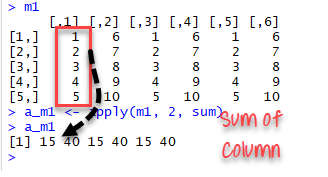

이 튜토리얼에서는 apply() 함수 모음을 소개하는 것을 목표로 한다. apply() 함수는 모든 모음 중 가장 기본적이다. 우리는 또한 sapply(), lapply(), 그리고 tapply()에 대하여 학습할 것이다. apply 함수 모음은 반복구문의 대안으로 볼 수 있다.
The apply() collection is bundled with r essential package if you install R with Anaconda. The apply() function can be feed with many functions to perform redundant application on a collection of object (data frame, list, vector, etc.). The purpose of apply() is primarily to avoid explicit uses of loop constructs. They can be used for an input list, matrix or array and apply a function. Any function can be passed into apply().
R을 아나콘다와 함께 설치하면 apply() 모음은 r 필수 패키지와 함께 제공된다. apply() 함수는 오브젝트(데이터 프레임, 리스트, 벡터 등)의 집합에서 중복 애플리케이션을 수행하기 위해 많은 기능을 갖추고 이용될 수 있다. apply()함수의 목적은 주로 반복구문 구조의 명시적 사용을 피하게 하는 것이다. 입력 리스트, 행렬 또는 배열에 사용될 수 있으며, 함수를 적용할 수 있다. 어떤 함수라도 apply() 를 통과할 수 있다.
이 튜토리얼에서는 다음에 대하여 학습한다 :
우리는 행렬에 apply() 함수를 사용한다. 이 함수는 3개의 인수를 취한다 :
xxxxxxxxxxapply(X, MARGIN, FUN)
인수 :
x : 배열 혹은 행렬
MARGIN : 함수를 어디에 적용할 지를 정하기 위해 1과 2 사이의 값이나 범위를 취한다.
FUN : 어떤 함수를 적용할 지 정한다. mean, median, sum, min, max 와 같은 내장함수는 물론 사용자 정의 함수도 적용할 수 있다.
가장 간단한 예는 행렬의 모든 열에 대해 합을 구하는 것이다. The simplest example is to sum a matrice over all the columns. The code apply(m1, 2, sum)은 5x6 행렬에 sum 함수를 적용하여 데이터 세트에 있는 각 열의 합을 구하여 반환한다.
xxxxxxxxxxm1 <- matrix( C <- (1:10), nrow=5, ncol=6)m1a_m1 <- apply(m1, 2, sum)a_m1
결과 :

좋은 사용 방법 : 결과를 console에 출력하기 전에 변수에 저장한다.
xxxxxxxxxxlapply(X, FUN)Arguments:-X: A vector or an object-FUN: Function applied to each element of x
lapply() 에서의 'l'은 리스트(list)를 의미한다. lapply()와 apply()의 차이는 출력 결과에 있다. lapply()의 결과는 리스트이다. lapply() 함수는 데이터 프레임이나 리스트와 같은 다른 종류의 오브젝트에도 사용될 수 있다.
lapply() 함수는 MARGIN 인수를 필요로 하지 않는다.
매우 쉬운 예로는 tolower() 함수로 matrix의 문자열을 소문자로 변환시키는 것이다. 우리는 유명한 영화의 이름을 가진 행렬을 만든다. 이름은 대문자 형식으로 되어 있다.
xxxxxxxxxxmovies <- c("SPYDERMAN","BATMAN","VERTIGO","CHINATOWN")movies_lower <-lapply(movies, tolower)str(movies_lower)
결과 :
xxxxxxxxxx## List of 4## $:chr"spyderman"## $:chr"batman"## $:chr"vertigo"## $:chr"chinatown"
unlist() 함수를 이용하여 리스트를 벡터로 변환한다.
xxxxxxxxxxmovies_lower <-unlist(lapply(movies,tolower))str(movies_lower)
결과 :
xxxxxxxxxx## chr [1:4] "spyderman" "batman" "vertigo" "chinatown"
sapply() 함수는 lapply() 함수와 같은 일을 하지만 벡터를 반환한다.
xxxxxxxxxxsapply(X, FUN)
인수 :
cars 데이터 세트로 부터 자동차들의 최저 속도(minimun speed)와 정지거리(stopping distance)를 측정할 수 있다.
xxxxxxxxxxdt <- carslmn_cars <- lapply(dt, min)lmn_cars
결과 :
xxxxxxxxxx## $speed## [1] 4## $dist## [1] 2
xxxxxxxxxxsmn_cars <- sapply(dt, min)smn_cars결과 :
xxxxxxxxxx## speed dist## 4 2
xxxxxxxxxxlmxcars <- lapply(dt, max)lmxcars결과 :
xxxxxxxxxx## $speed## [1] 25## $dist## [1] 120smxcars
xxxxxxxxxxsmxcars <- sapply(dt, max)smxcars결과 :
xxxxxxxxxx## speed dist## 25 120
우리는 내장함수를 lapply() 또는 sapply()에 사용할 수 있다. 벡터의 최소값(min)과 최대값(max)의 평균값(average)을 계산하기 위해 avg라는 함수를 생성한다.
xxxxxxxxxxavg <- function(x) {( min(x) + max(x) ) / 2}fcars <- sapply(dt, avg)fcars
결과 :
xxxxxxxxxx## speed dist## 14.5 61.0
sapply() 함수는 sapply() 값을 벡터에 저장하기 때문에 반환되는 출력에 있어서 lapply() 함수보다 효율적이다. 다음 예에서 우리는 이것이 항상 그런 것은 아니라는 것을 알게 될 것이다.
apply(), sapply() 그리고 lapply()의 차이를 다음 표와 같이 요약할 수 있다 :
| 함수 | 인수 | 목적 | 입력 | 출력 |
|---|---|---|---|---|
| apply | apply(x, MARGIN, FUN) | 함수를 행 또는 열 또는 동시에 적용 | 데이터 프레임이나 행렬 | 벡터, 리스트 , 배열 |
| lapply | lapply(X, FUN) | 함수를 입력 요소 모두에 적용 | 리스트, 벡터 또는 데이터 프레임 | 리스트 |
| sapply | sappy(X FUN) | 함수를 입력 요소 모두에 적용 | 리스트, 벡터 또는 데이터 프레임 | 벡터 또는 행렬 |
우리는 데이터 프레임을 자르기하기 위해 lapply() 또는 sapply()를 상호교환적으로 사용환할 수 있다. 우리는 숫자 벡터를 취해서 평균보다 높은 값만 포함하는 벡터를 반환하는 below_average() 함수를 만든다. 그리고 우리는 그 결과를 identical() 함수와 비교한다.
xxxxxxxxxxbelow_ave <- function(x) {ave <- mean(x)return(x[x > ave])}dt_s<- sapply(dt, below_ave)dt_l<- lapply(dt, below_ave)identical(dt_s, dt_l)
결과 :
xxxxxxxxxx## [1] TRUE
The function tapply() computes a measure (mean, median, min, max, etc..) or a function for each factor variable in a vector.
tapply() 함수는 mean, median, min, max 등이나 벡터의 각 facotr 변수에 대한 함수를 연산한다.
xxxxxxxxxxtapply(X, INDEX, FUN = NULL)
인수 :
데이터 과학자 또는 연구자가 할 일의 일부는 변수에 대한 요약정보을 계산하는 것이다. 예를 들어, 특성을 기준으로 평균 또는 그룹 데이터를 측정한다. 대부분의 데이터는 ID, 시, 국가 등에 따라 분류된다. 그룹별로 요약하면 더 흥미로운 패턴이 드러난다.
작동 방식을 이해하려면 iris 데이터 세트를 사용하자. 이 데이터 세트는 기계 학습 세계에서 매우 유명하다. 이 데이터 세트의 목적은 Sepal, Versicolor, Virginica 등 세 종류의 꽃 종류를 각각 예측하는 것이다. 데이터 세트는 각 종류별 꽃의 길이와 너비에 대한 정보를 수집한다.
선행 연구로서 각 종에 대한 길이의 중앙값을 계산할 수 있다. tapply() 함수는 이 계산을 수행하는 빠른 방법이다.
xxxxxxxxxxdata(iris)tapply(iris$Sepal.Width, iris$Species, median)
결과 :
xxxxxxxxxx## setosa versicolor virginica## 3.4 2.8 3.0